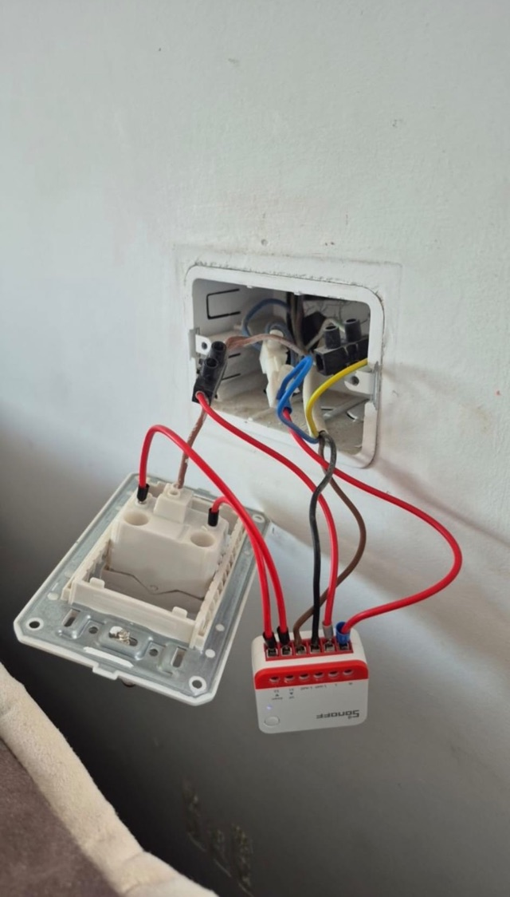

Как я сделал рольставню умной с помощью SONOFF MINI-ZBRBS
У рольставни в моём кабинете есть электромотор и обычный выключатель «вверх/вниз» на стене. Я поставил SONOFF MINI-ZBRBS, небольшой модуль Zigbee для рольставней, в подрозетник за этим выключателем. Настенный выключатель работает точно так же, как раньше, а теперь рольставня ещё и открывается и закрывается с плитки в ZigDash, дома и откуда угодно.
Как это работает
У мотора рольставни два силовых провода: один крутит его вверх, другой вниз. Настенный выключатель подаёт фазу на один из них. MINI-ZBRBS стоит посередине: два провода мотора идут на его выходы (Lout1 и Lout2), а старый выключатель на его входы (S1 и S2). Когда вы нажимаете выключатель, модуль управляет мотором. Когда ZigDash просит об этом по Zigbee, модуль тоже управляет мотором.
Модуль также знает, где находится рольставня, поэтому её можно отправить на 50%, а не только полностью вверх или вниз. А поскольку он питается от сети, он работает как роутер Zigbee и делает вашу сеть сильнее.
Что понадобится
- SONOFF MINI-ZBRBS (Zigbee-выключатель для рольставней). Zigbee2MQTT поддерживает его как модель
MINI-ZBRBS. - Мотор рольставни со своими концевыми выключателями: обычный трубчатый мотор с четырьмя проводами (ноль, вверх, вниз, заземление), который сам останавливается вверху и внизу. SONOFF указывает, что модуль рассчитан на моторы до 1 A, а сам модуль останавливает мотор через 2 минуты движения в одну сторону.
- Нулевой провод в коробке выключателя. Модулю нужен ноль для собственного питания.
- Место в подрозетнике за выключателем. SONOFF рекомендует подрозетник глубиной не менее 60 мм.
- Клеммы с рычажками (я использовал WAGO 221) и несколько коротких кусков провода.
- Хаб Zigbee2MQTT дома. Если его ещё нет, смотрите Хабы.
- ZigDash на телефоне (Google Play). Управлять рольставней дома можно бесплатно. Управление откуда угодно работает через удалённое управление ZigDash Pro: разовая покупка, без подписки.
1. Подключите модуль
У модуля шесть клемм, подписанных на корпусе: N, L, Lout1, Lout2, S1 (вверх) и S2 (вниз). Клеммы заземления у него нет. Вот как я подключил свой:
| Клемма | Куда идёт | В моей коробке |
|---|---|---|
| N | Ноль | Синие нулевые провода, соединённые в WAGO 221, и короткий провод оттуда на N (см. примечание ниже о его цвете) |
| L | Фаза | Питающая фаза коробки |
| Lout1 | Мотор: вверх (SONOFF называет это «вперёд») | Чёрный провод мотора |
| Lout2 | Мотор: вниз («назад») | Коричневый провод мотора |
| S1 | Выход «вверх» выключателя | Один из выходов старого выключателя |
| S2 | Выход «вниз» выключателя | Другой выход старого выключателя |
Старый выключатель остаётся. На его общую клемму, как и раньше, приходит фаза. Его два выхода больше не идут на мотор: они идут на S1 и S2 и говорят модулю, в какую сторону крутить. S1 и S2 — входы сетевого напряжения, а не низковольтные: запитайте общую клемму выключателя от той же фазы и через тот же автомат, что и L.
Заземление: оставьте жёлто-зелёный провод заземления мотора соединённым с заземлением коробки, как было. На модуль он не идёт.
Вверх и вниз: цвета проводов в каждом доме свои. Прежде чем отключать выключатель, запишите, какой провод мотора питал его выход «вверх», и пометьте его: он идёт на Lout1. Если перепутаете, в шаге 4 показано, как это исправить.



Проверьте, что каждая винтовая клемма хорошо затянута. Пока оставьте модуль вне коробки, клеммами от себя: на следующем шаге вы выполните сопряжение.
2. Выполните сопряжение с ZigDash
Для сопряжения на модуль должно быть подано питание и нажата его кнопка, так что это единственный момент, когда вы работаете рядом с коробкой под напряжением. Нажимайте только кнопку, пластиковым предметом (обратной стороной ручки), и больше ничего не трогайте. Положите модуль на что-нибудь непроводящее, чтобы он не касался металлической рамки выключателя.
- В ZigDash откройте Устройства и нажмите Начать сопряжение.
- Включите автомат. Нажмите и удерживайте кнопку модуля около 5 секунд, пока синий светодиод не начнёт медленно мигать. Модуль остаётся в режиме сопряжения до 3 минут.
- ZigDash покажет новое устройство. Дайте ему понятное имя, например Рольставня кабинет.
- Выключите автомат. Уложите провода, поставьте модуль за выключатель, закройте коробку и снова включите автомат. Всё остальное делается с телефона и на веб-странице Zigbee2MQTT.
3. Укажите, какой у вас выключатель
Модулю нужно знать, как ведёт себя ваш настенный выключатель:
- Клавишный выключатель с фиксацией в положениях вверх, выкл. или вниз (как у меня): режим
edge. - Кнопка, которая возвращается, когда её отпускаешь: режим
pulse.
Проще всего это сделать на веб-странице Zigbee2MQTT: откройте устройство, перейдите на вкладку Exposes и установите external_trigger_mode в edge или pulse. (Это можно сделать и кнопкой модуля: быстрое тройное нажатие переключает на следующий тип выключателя, и светодиод мигает три раза; возможно, придётся повторить. Для этого снова нужно вскрывать коробку, поэтому я использовал Zigbee2MQTT.)
Затем переключите настенный выключатель вверх, в выкл. и вниз: рольставня должна двигаться и останавливаться, как всегда. Если нет, режим выбран неверно; установите другой.
4. Калибровка
Модуль запоминает, сколько времени рольставне нужно, чтобы пройти полностью вверх и вниз. Без этого он может открывать и закрывать, но не может выставить положение вроде 50%.
- На веб-странице Zigbee2MQTT, на вкладке Exposes устройства, установите
motor_travel_calibration_actionвstart_automatic. - Дайте ей пройти: рольставня проедет до конца в одну сторону, потом в другую. Не трогайте выключатель в это время. Когда всё закончится,
motor_travel_calibration_statusпокажетCalibrated.
(На самом модуле ту же калибровку запускает удержание кнопки дольше 10 секунд, пока светодиод не начнёт «дышать».) Если автоматическая калибровка не завершается (например, со слабым мотором), и SONOFF, и Zigbee2MQTT описывают ручную калибровку: вы сами отмечаете полностью открытое и полностью закрытое положение.
Вверх и вниз перепутаны? Выключите автомат, поменяйте местами провода на Lout1 и Lout2 и откалибруйте заново. Параметр invert_cover в Zigbee2MQTT лишь переворачивает сообщаемое положение; направление вращения мотора он не меняет.
5. Плитка рольставни в ZigDash
- На панели нажмите Добавить из устройства и выберите рольставню.
- На плитке есть кнопки Открыть, Стоп и Закрыть, а также ряд готовых положений (по умолчанию 0, 25, 50, 100). В настройках плитки можно включить ползунок положения.
- Откуда угодно: с ZigDash Pro включите удалённое управление, и та же плитка работает вне дома, без открытия портов на роутере и без ежемесячной платы.
Настенный выключатель и приложение работают бок о бок: выключатель остаётся для всех, у кого нет приложения, а плитка продолжает работать независимо от того, двигали рольставню в последний раз рукой или с телефона.